对象变成向量
图像、视频、分子结构通常可表示为 z ∈ Rd。文本是例外，后面用离散状态空间处理。
基于 lecture_notes.pdf 整理
这份笔记的主线很干净：把图像、视频、分子或文本看成随机对象；先设计一条从简单噪声到真实数据的概率路径； 再学习让样本沿这条路径移动的动力学。连续数据用 ODE/SDE，离散文本用 CTMC。
来源：MIT 6.S184 course website， 本页为个人中文学习整理。
训练目标不是直接记住图片，而是学会“该往哪里走”。
Roadmap
图像、视频、分子结构通常可表示为 z ∈ Rd。文本是例外，后面用离散状态空间处理。
“生成一张狗的图”变成从未知数据分布 pdata 采样。
p0 = pinit，p1 = pdata，中间如何过渡由我们选择。
Flow 学向量场 ut，Diffusion 学 score ∇ log pt 或等价重参数化。
训练后从高斯噪声出发，沿 ODE/SDE/CTMC 模拟，最后得到样本。
确定性轨迹：只有初始噪声随机。核心是 ODE 和向量场。
随机轨迹：每一步都注入 Brownian 噪声。核心是 SDE 和 score。
离散 token 无法“微分移动”，改用连续时间马尔可夫链的跳转率矩阵。
Section 1
生成模型不是寻找唯一“正确答案”，而是在所有可能对象上定义一个分布。 好样本在 pdata(z) 下概率高，坏样本概率低。
z ~ p_data
z ~ p_data(. | y)
数据集 z1, …, zN ~ pdata 只是对真实数据分布的有限观测。模型真正要学的是分布，而不是复制训练样本。
Section 2
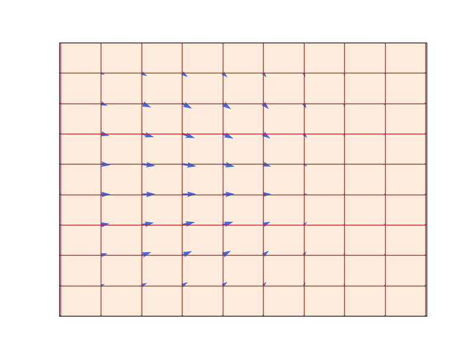
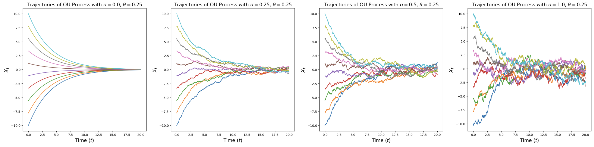
dX_t / dt = u^θ_t(X_t)
dX_t = u^θ_t(X_t)dt + σ_t dW_t
X_0 ~ p_init
初始点 + 每一步 Brownian 噪声
X_{t+h}=X_t+h u_t(X_t)
Euler-Maruyama：+ σ_t √h ε
σ_t = 0 时退化成 Flow
Section 3
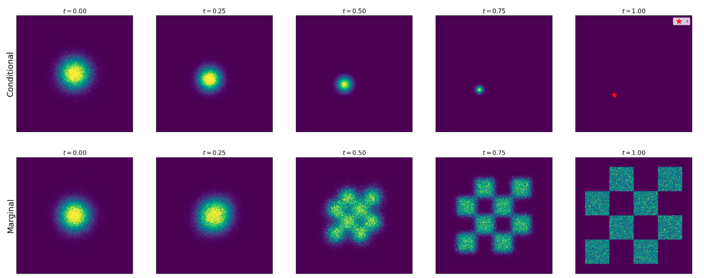
先固定一个训练样本 z，设计一族分布 pt(x | z)：
p_0(. | z) = p_init, p_1(. | z) = δ_z
再对所有可能的 z ~ pdata 混合：
p_t(x) = ∫ p_t(x | z) p_data(z) dz
最常用路径把干净数据和噪声线性混合：
x = α_t z + β_t ε, ε ~ N(0, I)
条件向量场 utargett(x | z) 通常可解析写出， 但它只会把样本推向一个固定训练点。真正需要的是边缘向量场 utargett(x)，它等于对所有可能终点的后验加权平均。
当前噪声样本 x 可能来自很多干净样本 z。模型要走的方向，是“所有可能去向”的可信度加权平均。
虽然边缘向量场不可直接算，但定理表明：回归到条件向量场的损失，与回归到边缘向量场的损失只差一个与参数无关的常数。
L_CFM = E || u^θ_t(x) - u^target_t(x | z) ||²
这就是 Flow Matching 的漂亮之处：训练时不用模拟 ODE，只做监督式回归。
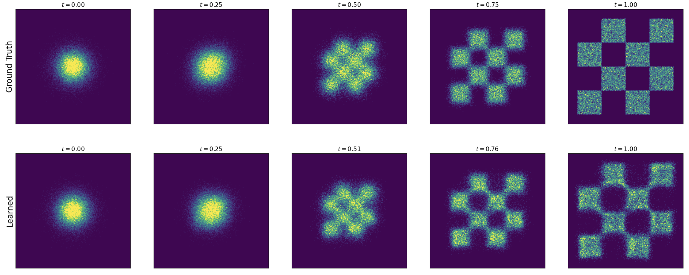
αt = t，βt = 1 - t 时：
x = t z + (1 - t) ε
target velocity = z - ε
所以训练就是让网络看到中间点 x 和时间 t 后，预测“从噪声 ε 指向数据 z 的速度”。
Section 4
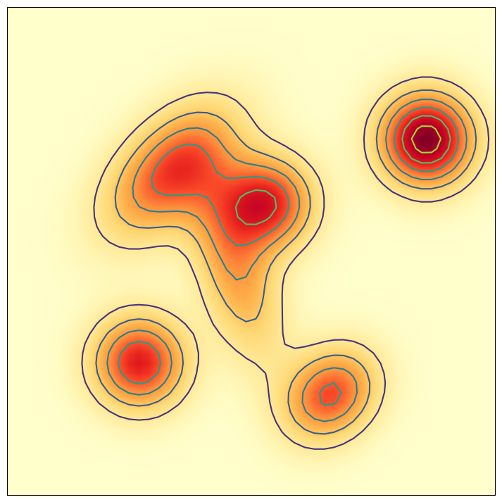
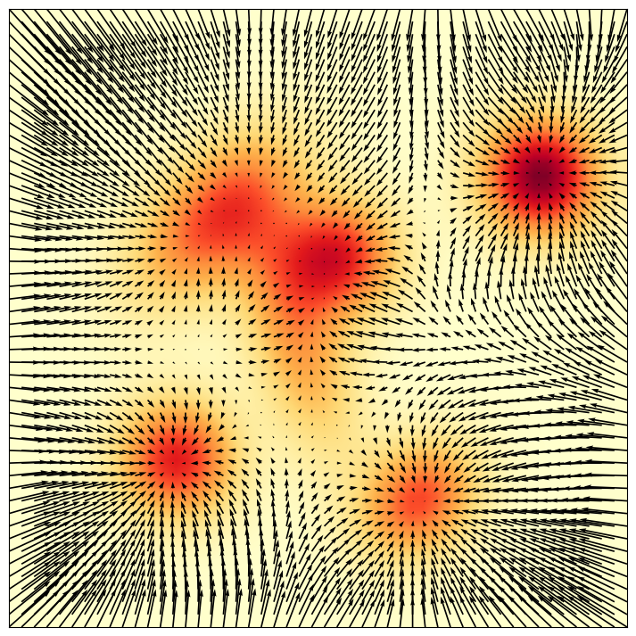
对任意分布 q(x)，score 定义为 ∇ log q(x)。它不告诉你概率是多少，而告诉你往哪里移动会更像数据。
∇ log p_t(x | z) = -(x - α_t z) / β_t²
在高斯概率路径下，向量场和 score 可相互转换。 因此很多模型可以选择预测速度、预测 score、预测噪声或预测 denoiser，本质上是在选更稳定的参数化。
dX_t = [u_t(X_t) + σ_t²/2 ∇log p_t(X_t)]dt + σ_t dW_t
给干净样本 z 加噪得到 x = αtz + βtε。 网络学习从带噪输入里恢复“噪声方向”或“干净数据的后验信息”。这就是为什么很多扩散模型看起来像是在做去噪。
Section 5
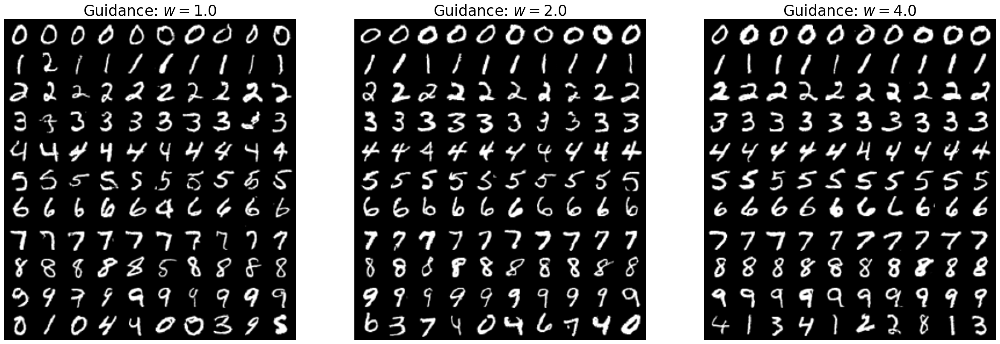
直接把提示词或标签 y 输入网络，训练 ut(x | y)。理论上可行，但实际中条件对齐可能不够强。
同一个模型同时学“有条件”和“无条件”：训练时以概率 η 把标签替换为 ∅。
ũ_t(x | y) = (1 - w) u_t(x | ∅) + w u_t(x | y)
w > 1 会放大“提示词带来的方向差”。这是一种经验上极有效的启发式。
Section 6
时间 t 常用 Fourier features；类别标签可学 embedding；文本提示常用 CLIP、T5、UL2、ByT5 等预训练编码器。
DiT 把图像切成 patch token，用 self-attention/cross-attention 处理；U-Net 用编码器-解码器和跳连保持局部细节。
VAE/Autoencoder 先把高分辨率图像压缩到低维 latent，再在 latent 里训练 flow/diffusion，最后解码回像素空间。
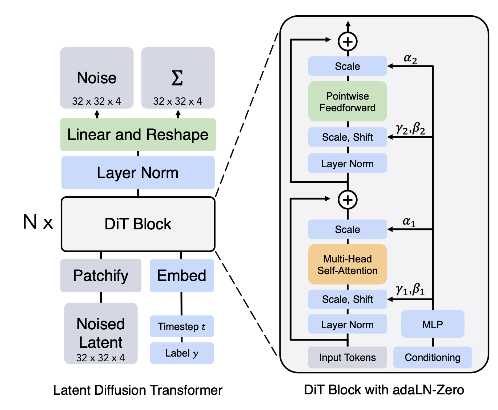
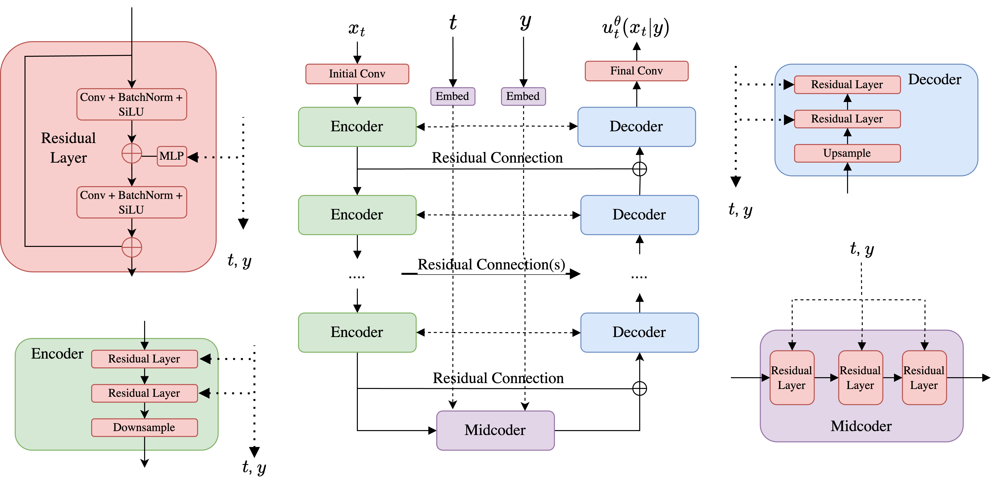
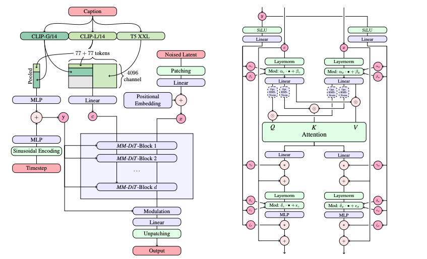
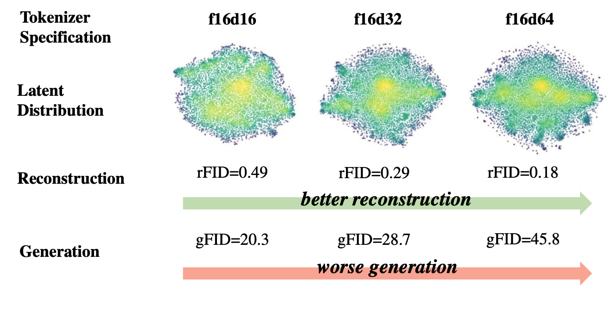
笔记中强调它采用 conditional flow matching、classifier-free guidance、预训练 autoencoder latent space，以及多种文本 embedding；最大模型约 8B 参数，采样约 50 步。
视频多了时间维 T，因此需要 temporal autoencoder 和时空 patchification；笔记中最大模型约 30B 参数。
Section 7
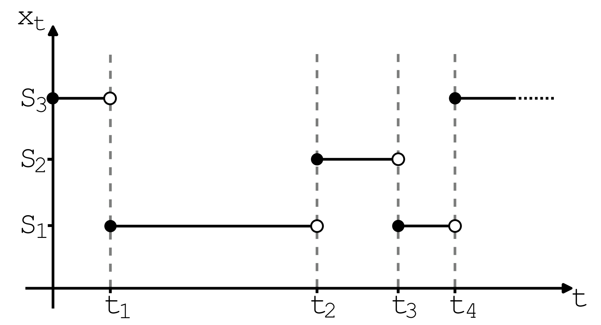
在状态空间 S = Vd 中，CTMC 用 Qt(y | x) 表示从状态 x 跳到 y 的速率。它就是离散版的“动力学”。
Q_t(y | x) ≥ 0 for y ≠ x
Q_t(x | x) = -Σ_{y≠x} Q_t(y | x)
对 factorized mixture path，边缘 rate matrix 等价于每个 token 位置的后验分类概率 p1|t(zj = v | x)。
L_DFM = E Σ_j -log p^θ_{1|t}(z_j | x)
连续 Flow Matching 变成回归；离散 Flow Matching 变成逐 token 分类。
Cheat Sheet
z ~ p_data
z ~ p_data(. | y)
X_0 ~ p_init
X_{t+h} = X_t + h u^θ_t(X_t)
X_{t+h}=X_t+h u^θ_t(X_t)+σ_t√h ε
x = α_t z + β_t ε
p_t(. | z)=N(α_t z, β_t² I)
L_CFM = E ||u^θ_t(x)-u^target_t(x|z)||²
L_CSM = E ||s^θ_t(x)-∇log p_t(x|z)||²
ũ=(1-w)u(x|∅)+w u(x|y)
L_DFM = E Σ_j -log p^θ(z_j | x,t)
Glossary